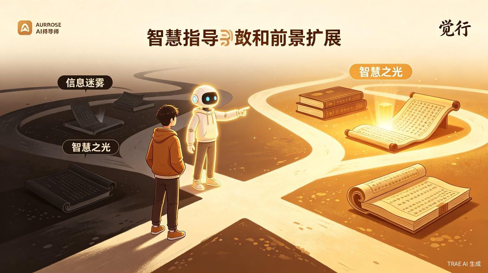

AI 精神导师——觉行
在觉中行，行中觉，觉行合一
一、项目背景与问题洞察
当前网络信息环境呈现出复杂化态势，各类偏激、片面乃至有害的言论在社交媒体平台持续传播，且不断以新的形式组合演变。性别对立、阴谋论、毒鸡汤等内容的泛滥，正对公众尤其是青少年群体的价值观念产生潜移默化的负面影响。
值得关注的是，有价值的深度讨论与理性声音在算法推荐机制下往往处于弱势地位，难以触达广大用户。更为严峻的是，当用户面对明显存在问题的内容时，普遍缺乏有效的思辨工具与表达能力进行回应，仅能依靠朴素的直觉判断，甚至在不自觉中被错误观念所同化。
既然低质量内容可以被广泛传播，那么经过历史检验、对人类文明具有积极意义的思想精华，同样应当被置于更显要的位置，为公众提供更加多元、更加优质的选择。
解决这一问题，需要优质的引导者与持续的实践探索二者兼备。然而，具备深厚人文素养与丰富人生阅历的引导者在现实社会中属于稀缺资源，并非人人都有机会获得其指点。人工智能技术的成熟，为这一困境提供了大众化、低门槛的解决路径。
设想这样的场景：当用户在浏览短视频或社交媒体内容时，面对令其感到不适或质疑的内容，打开评论区却只见消极、逃避、恶意揣测的言论，理性声音被淹没甚至遭到攻击。长此以往，公众的认知水平与思辨能力如何提升？文化高地的失守又将带来怎样的社会后果？
因此，我们迫切需要一位能够提供真知灼见、发挥文化引领作用的智能引路人。"觉行"正是在这一背景下应运而生——它将在各类具有讨论价值的内容下方，以评论、弹幕等形式参与互动，帮助用户从实际案例与思想实验出发，开展深度思考，拓展认知视角，将人类文明的智慧结晶融入当代议题的讨论之中，助力公众在信息洪流中保持清醒的判断力与坚定的价值立场。

产品定位
立足于娱乐媒体文化高地的 AI 引导者。具体实现形式包括：在短视频、社交媒体帖子下方主动发布具有建设性的评论，同时支持任何用户就相关内容与"觉行"展开深度探讨，引导用户学习经典著作，提升批判性思维能力。
品牌释义
"觉行"二字，取意于"在觉中行，行中觉，觉行合一"。其中，"觉"代表觉察、觉悟，强调对事物本质的清醒认知；"行"代表实践、行动，强调将认知转化为具体行为。我们期望用户能够在觉察中行动，在行动中觉察，最终实现认知与实践的统一，而非被动接受或盲目跟从。
二、目标用户与核心痛点
目标用户群体
面向全体互联网用户，重点关注心智发展尚未成熟、世界观、人生观与价值观仍在形成阶段的青少年群体。
典型应用场景
- 用户浏览短视频、短剧等内容时，"觉行"在评论区发布具有引导价值的观点
- 用户可就特定内容与"觉行"展开多轮深度对话，进行思想碰撞
- 基于讨论主题，"觉行"向用户推荐相关的经典文献与思想资源
当前核心痛点
- 市场上缺乏具备文化引领功能的 AI 产品，用户长期处于被动接收信息的状态
- 网络空间中理性声音缺失，不良风气缺乏及时、有效的批驳与纠正
- 公众普遍缺乏组织观点、进行有效论证的能力，面对错误言论难以回应
- 典型案例："扶不扶"老人议题、性别对立等社会热点中，极端观点往往占据上风
三、价值与意义
深层社会意义
- 帮助青少年在信息爆炸时代建立稳固的认知基础与价值判断能力
- 将人类文明的智慧结晶融入当代议题讨论，降低优质内容的获取门槛
- 引导公众正确处理物质需求与精神追求之间的辩证关系
- 帮助用户在多元选择面前保持独立思考与清醒判断
- 将积极的精神力量转化为推动社会进步的实际动能
四、产品形态与技术实现
核心功能模块
技术实现路径
- 基于大语言模型（LLM）构建核心对话与内容生成能力
- 结合经典文献知识库，采用 RAG（检索增强生成）技术提升回答质量
- 通过社交媒体平台 API 或浏览器插件形式实现多平台接入